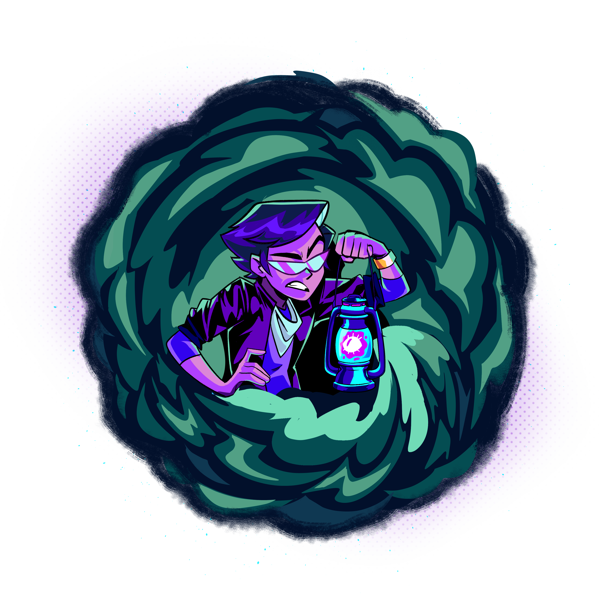

Meu nome é Fyori.
Sou contador de histórias e caçador do misterioso. Meu trabalho é transportar as pessoas para mundos com o poder do storytelling.
No YouTube, compartilho vídeos sobre terror, mistério e vídeos que já foram vistos por milhões de pessoas.
FAQ
QUAIS PROGRAMAS EU USO?
QUAIS EQUIPAMENTOS EU USO?
Microfone: Rode NT1
Fone: Audio Technica ATH-M50x
Interface de Áudio: Focusrite Scarlett Solo
Teclado: Logitech MX Keys Mini
Mouse: Logitech MX Master 3S Branco
Monitor: Dell U3225QE
Monitor de Áudio: Edifier R1700BT
Câmera: Blackmagic Pocket Cinema 4K
Fone: Audio Technica ATH-M50x
Interface de Áudio: Focusrite Scarlett Solo
Teclado: Logitech MX Keys Mini
Mouse: Logitech MX Master 3S Branco
Monitor: Dell U3225QE
Monitor de Áudio: Edifier R1700BT
Câmera: Blackmagic Pocket Cinema 4K
ONDE EU PEGO IMAGENS E MÚSICAS PROS VÍDEOS?
Para músicas, eu uso a Epidemic Sound, algumas trilhas sonoras de jogos, e músicas sem royalty, como dos canais CO.AG e White Bat Audio. Para footages e imagens adicionais, eu uso a Artlist e Envato.
COMO SUGERIR UM VÍDEO?
Você pode comentar nos vídeos, ou enviar um e-mail para contato@fyori.com.br.
Parcerias: comercial@fyori.com.br